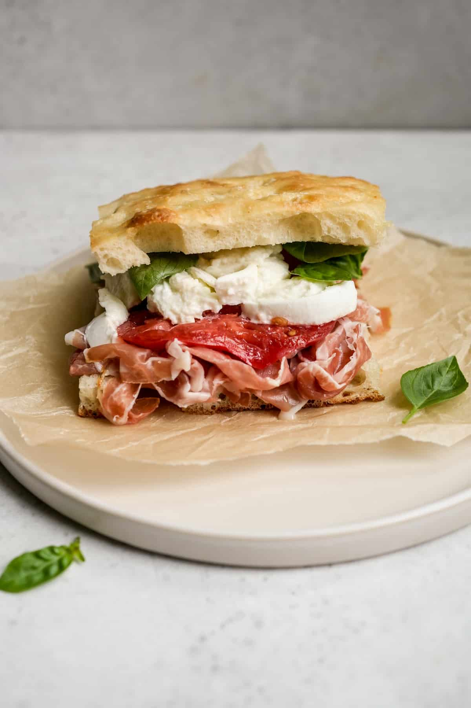

Mozarella Parma Sandwich

Description
A great, tasty and quick sandwich to make, for lunch or as a snack. Can be made in tiny pieces as a bite to serve at parties.
Ingredients
- Ciabatta bread, one piece (or your favorite other bread - your pick!)
- Butter
- 0.75 of a mozarella, sliced thin
- 3 slices of parma ham
- A few basil leaves
- 1/3rd of a tomato, thinly sliced
- Salt and pepper, to taste
Steps
- Carve up your bread into two slices
- Butter it well
- Add lots of thin slices of mozarella, to entirely cover the bread
- Add a tiny amount of salt and pepper
- Add the parma ham slices on top
- Add the tomato slices on top
- Add another round of salt and pepper on the tomatoes
- Finish off with some basil leaves. The more, the better, really.